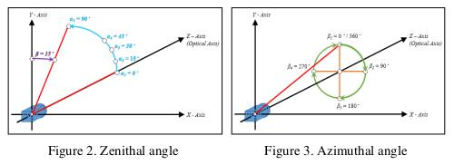
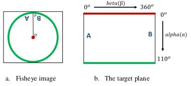

Definition and overview
What is MoilApp
MoilApp is an image processing program create by MOIL-LAB, a laboratory specializing in omnidirectional imaging and surveillance. The program utilizes the Moildev SDK, a complex technique for processing Fisheye Image. This SDK is most commonly used for creating Panorama Views and Anypoint View, as it enables the processing of Fisheye Image, which are known for their high image quality and wide-angle FoV. This feature makes it ideal for various applications, such as surveillance system, computer vision etc. With its sophisticated image processing technology, MoilApp has become a choice for user who require high-quality images and a wide-angle field or view. The program 's ability images and to process Fisheye image provides several benefits, such as the ability to stitch together panoramic views. Furthermore, its advanced image processing capabilities make it ideal for use in various fields. overall, the Moildev SDK and MoilApp are excellent tools for anyone looking to process Fisheye image and take their image processing capabilities to the net level.
Fisheye Lens Technology
The Fisheye lens, also known as the Fisheye image sensor (FIS), is a unique ultra-wide-angle lens with a short focal length that generates considerable optical distortion and is designed to provide a wide, panoramic, or hemispherical image. The large field of view is the most important characteristic. With a FOV of more than 180 degrees, a Fisheye camera (also known as a Fisheye image sensor, or FIS) can capture a clear image, but a severer barrel distortion comes along. According to Prof. Chuang-Jan Chang, the approach to displaying Fisheye camera images incorporates multicollimator metrology and cartography in order to methodically characterize the Fisheye camera's projection mechanism. The hemisphere coordinate system is produced by the Fisheye camera in our suggested technique. Hence, the position of an imaged point referring to the principal point on the image plane directly reflects its corresponding zenithal distance (alpha). and azimuthal distance (beta) of the sight ray in space to normalize the imaged point onto a small sphere presented in the following figure:

Based on the coordinate system, the angles respectively defined by incident rays and the optical axis are the zenithal angle of alpha and the azimuthal angle of beta, which are the angles surrounding the optical axis. It has a relationship with the coordinate system X, Y, and Z, where the optical axis is defined by the Z-axis. For the zenithal angle, it is the angle from the vertical optical axis to the X- and Y-axes, as shown in figure 3. a. Whereas the azimuthal angle is defined as the angle of positive Y as the reference point with a value of 0 degrees and the Z-axis is used as the rotation axis, as shown in figure 3. b. The rotation around the optical axis is the angle of the Y axis, starting from the positive direction and clockwise around the X axis.
{kind=link}
What is Anypoint View
This method, which adjusts the optical axis to the specified zenithal (alpha) and azimuthal (beta) angles depending on the coordinates provided, changes the picture plane coordinates to hemispherical coordinates. The Anypoint view is an image that has been undistorted in a certain area according to the input coordinates.
What is Panorama View
To accommodate the ordinary human visual perception, the panoramic view may offer a horizontal perspective within a particular immersed environment. A panoramic perspective is similar to unfolding a hemisphere. Here, Figures 4 (a) and 4 (b) demonstrate the Fisheye image model and the mapping plane of the panoramic view, respectively. The longitude and latitude of spherical coordinates are the target plane's horizontal and vertical axes, respectively. The maximum radius of longitude, also known as beta, and the latitude, commonly known as alpha, are each half of the camera's field of view (FoV), which in this study has a 220 degree FoV. The Fisheye image can be expanded by setting the alpha and beta values to 0 and then using our method's formula to calculate.
{kind=link}
What is the use of this app?
Fisheye camera technology is widely used in various industries, such as 3D measurement, medicine, ADAS systems, and many more. With their ability to capture a wide-angle field of view, fisheye cameras can provide high-quality images and data that are essential in various applications. The technology has become increasingly prevalent as it offers a cost-effective solution for capturing large areas without the need for multiple cameras. In 3D measurement, fisheye cameras can capture data with high accuracy, while in medicine, they are used for endoscopy procedures. In ADAS systems, fisheye cameras are used to provide a 360-degree view around the vehicle, enhancing safety and driver assistance features. With the increasing demand for high-quality imaging and data in various industries, the use of fisheye camera technology is expected to continue to grow in the future.